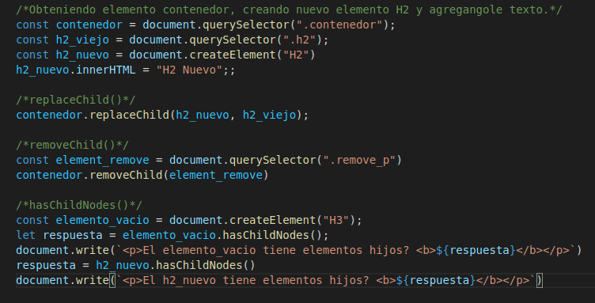

Lección 23 - Metodos de Childs
Definición: Estos metodos son aplicados sobre los elementos hijos de los elementos padre
Metodos:
-
elementoPadre.replaceChild("nuevo elemnto", "viejo elemento"): remplaza un elemento hijo por otro elenentro dentro
del elemento padre.
-
elementoPadre.removeChild(): Elimina un elemento hijo, recibe como tal elemento luego de obtenerlo con querySelector()
o algun otro metodo.
- elementoPadre.hasChildNodes(): Metodo que devuelve True si un elemento posee hijos.
H2 antiguo
Parrafo antiguo
Parrafo a eliminar
Codigo:
